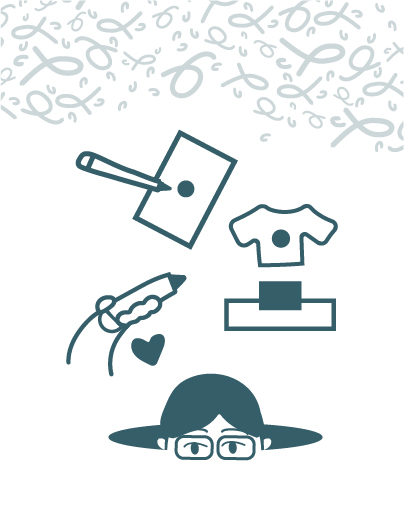

¿Qué es una imagen verdadera?
Una campaña visual que revela cómo el diseño gráfico crea la "verdad" en la industria del maquillaje.
La publicidad de maquillaje no solo vende productos, vende discursos. A través de decisiones estéticas; color, luz, encuadre, retoque, etc. El diseño construye versiones ideales de belleza que afectan cómo nos miramos y cómo consumimos. Este proyecto presenta una misma imagen que podemos encontrar en una típica publicidad de maquillaje, intervenida con tres discursos diferentes: emocional, social y político. La intención no es solo mostrar cambios visuales, sino hacer visible el poder que tiene el diseño para modificar nuestra percepción.
Ver más aquí